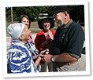

Volunteer
We Depend on You
 For many years the volunteer GGO Planning Committee has been working with organizations throughout the state to promote an interest in lifetime sports, recreation and physical activity. From the most serious athlete to the determined participant, we offer a wide array of events that provide physical activity, fun and socialization. However, the success of this endeavor on the state level is GREATLY dependent on the help of our wonderful volunteers. Thank you for joining us, and being a part of the 200+ people who gave so generously of their time to see and encourage living longer and living better through action, motion, fun and social interaction. It was an inspiration.
This was a qualifying year for the National Senior Games. For more information on the 2015 National games visit www.nsga.com.
2014 Volunteers
The Volunteer signup deadline was Tuesday, September 2, 2014.
PDF forms require Adobe Reader
Volunteer T-shirts & Check In
Volunteer T-shirts, Certificates of Appreciation, maps, details of your event’s specific responsibilities will be given out on the morning of your event. Any questions you may have can be answered at that time. If you need further information, please contact Allison Gatliff (478-918-7954) or Bonnie Romines (478-396-9403)